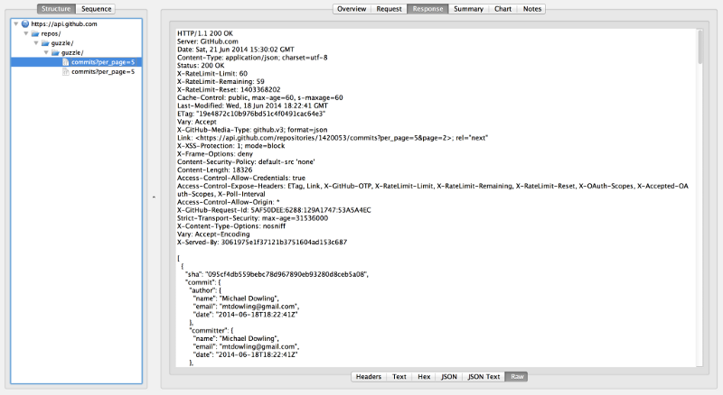

If you’ve ever had to try unit test code that’s dependent on external services, you’ll know the pain of trying to mock-up fake API requests by hand. It’s painful to setup and painful to maintain, this little tutorial attempts to make the whole process as easy as possible.
So firstly download and install Charles Web Proxy. Here’s a good description of what Charles can do from their site .
Charles is an HTTP proxy / HTTP monitor / Reverse Proxy that enables a developer to view all of the HTTP and SSL / HTTPS traffic between their machine and the Internet. This includes requests, responses and the HTTP headers (which contain the cookies and caching information).
We’re going to use Charles to capture an initial set of tests, then save the RAW responses as files that will then be used to supply our mock data to guzzle. So once you got Charles running with a proxy running on port 8888, run an api call like so.
require ‘vendor/autoload.php’; use GuzzleHttp\Client; use GuzzleHttp\Subscriber\Mock;
$client = new Client([ ‘base_url’ => [‘https://api.github.com/repos/guzzle/guzzle/commits?per_page=5', []], ‘defaults’ => [ ‘proxy’ => ‘http://localhost:8888' ] ]); $req = $client->get();
echo $req->getBody();
bit of setup `here `__. When you get a response from this call, view it in Charles under Raw and

Save this text(including the http headers) as a new file. This is going to be your new mock response that’s going to override Guzzle’s regular response.
This is some sample code to do the injection.
require ‘vendor/autoload.php’; use GuzzleHttp\Client; use GuzzleHttp\Subscriber\Mock;
$client = new Client();
$mock = new Mock(); $mock->addResponse(__DIR__.’/mockresponses/your_raw_file’);
$client->getEmitter()->attach($mock); // This is the key line, attaching the mock file response to your client. $response = $client->get(); echo $response->getBody();
Hopefully if you’re using some sort of dependency injection to supply the guzzle library to your client code, you can easily over-ride the client calls with your mock responses by attaching the emitter, then make stable assertions about the state of your client. All of this without any reliance on external services.